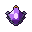

常见问题与术语
新茶客最常问的问题、本服专有名词一览，以及各玩法的星级 / 品质对照
常见问题
菜单打不开 / 不知道从哪开始？
按住 Shift 再按 F，或者右键背包里的 ☕ 鼠鼠茶屋手账，就能打开总菜单（也可以输入 /menu）。手账丢了，下次进服会自动补发。第一次玩先看 前 10 分钟，再看 新手成长路线。
菜单和物品看起来是原版的样子？
多半是进服时没接受服务器资源包。本服的手账、菜单、鱼、作物和道具都靠资源包显示专属贴图，退出后在多人游戏列表里编辑这个服务器，把「服务器资源包」改成「启用」再进一次就好。另外请用 Minecraft Java 版 26.3 进服。
新手见面礼在哪领？
输入 /guide 打开新手绘本，点左下角 🎁：30 茶屋币 + 面包 ×8 + 樱花树苗 ×2，每人限领一次。
在哪里盖房子？
三种选择：主城里租 31×31 庄园（/dipi，30 币 / 7 天）、商业街租旺铺（/playershop，50 币 / 7 天），或者走出任意城门去樱花山谷自由建造、用金铲子圈地（永久、免费）。详见 领地与家。
可以在资源世界盖房子吗？
不要。资源世界、下界、末地每 7 天整个重置，里面的东西都会消失。那里是挖矿、砍树、刷怪用的（死亡不掉落）。家请盖在主世界。
主城里为什么不能挖、不能放方块？
主城和环城规划区（中心周围约 ±116 格）受保护，只能在自己租的庄园、旺铺里，或搭子 / 好友授权的地方建造。出城门就能随便建。
死了怎么办？
别慌，全服都是死亡不掉落：主世界、资源世界、下界、末地都一样，背包和经验都保留。死后可以用 /back 回到死亡地点。
怎么回家、回主城、去朋友那？
/spawn 回主城，/sethome 设家、/home 回家，/back 回上一个位置，/tpa 玩家名 请求传送到朋友身边。租了庄园可以 /dipi home。
为什么同样的东西越卖越便宜？
出货有两层额度：每类玩法（鱼 / 作物 / 牧场 / 昆虫 / 工坊 / 冒险）每天前 5,000 币全价，之后 70%、超过 10,000 币后 40%；同一种东西每天前 64 件全价，之后 75%、50%。第二天零点重置。换一样东西卖就不受影响，详见 每日额度。
/sell 会把我的装备卖掉吗？
不会。/sell 只扫描主背包里的星级鱼、作物、牧场品、昆虫、工坊成品、香料和魔物核心，不碰盔甲栏和副手，石头、木头这类原版方块也不收。
为什么有些作物卖不上价？
自己在农田里种出来的作物、在服里钓起来的鱼才带「星级」标签，按星级卖钱、能进图鉴、能交专精突破任务。打怪掉的、村民换的胡萝卜马铃薯是没有星级的白板原版物品，只能按 1–6 币的原版价卖，也不能交突破任务，喂牧场动物不涨好感。
选错专精了能换吗？
能。/job 左键选主修后 7 天内不能再换。每个专精的等级各自保存，换回来不会清空；但只有当前主修的加成和天赋生效，经验也只给当前主修。天赋每周可以免费洗点一次。
专精经验卡住不涨了？
到 Lv5 / 10 / 15 / 20 时经验会存满停住，要先完成突破任务，再去天赋页点「完成突破」。另外每天前 600 经验全额，之后减半。见 突破任务。
非当季的作物种不了？
12 种特色作物只能在对应季节露天种。想反季种，在耕地正上方 12 格内盖个玻璃屋顶，那块地就算温室。原版小麦、胡萝卜、马铃薯、甜菜根、地狱疣四季都能种。
钓鱼大赛、庆典、流星雨什么时候有？
钓鱼大赛每天 13:00 和 20:30（北京时间，至少 2 人在线）；四季庆典每季一场，在该季第一个有人在线的晚上 21:00–22:00 开幕；流星雨夜里随机出现，大约几个小时一场。开始时全服都会播报。
/wish 和 /pool 有什么区别？
/wish 只能在流星雨期间对夜空许愿，送幸运和 20 币；/pool 是锦鲤许愿池，大家投茶屋币攒全服狂欢，自己攒福气值。
朋友不在线，怎么给他东西？
茶屋币可以用 /pay 玩家名 金额 转给在线玩家。想收别人的东西，可以在委托板 /order post 挂悬赏，对方交货后东西会存进你的收件箱，用 /order claim 领。
家具、洒水器摆错了怎么收回？
3D 家具左键或潜行右键收回（只有主人和搭子能收）；洒水器像普通方块一样挖掉就能完整收回；宴席灶台潜行右键收回。
术语表
| 名词 | 意思 |
|---|---|
 茶屋币 茶屋币 | 全服通用货币。出货、委托、签到、钓鱼都能赚，/money 看余额。 |
 福气值 福气值 | 不能交易的荣誉点数，靠投许愿池、签到、献祭、试炼、点赞攒，在 /pool shop 换永久特效和称号；≥100 时主城商店 9 折。 |
| 星级 / 品质 | 鱼、作物、牧场品、昆虫、工坊成品都分 1–4 星，星越高越值钱，见下方对照表。 |
| 👑 珍品 / 鱼王 / 大师特调 | 各玩法里的 4 星（最高品质）叫法不同：作物叫珍品，鱼叫鱼王，工坊叫大师特调。 |
| 传说鱼 | 每个钓区里最稀有、最大的鱼，图鉴里是金框。 |
| 奇物 | 钓鱼捞到的「不是鱼」的东西（小黄鸭、旧雨靴……），也算图鉴，全水域都能捞。 |
| 出货 | 用 /sell 把物产卖给茶屋换币。 |
| 热卖 / 今日特需 | 每天有一样东西出货涨价（多数翻倍，鲜鱼日 ×1.5）。 |
| 每日额度 / 饱和 | 每类玩法、每种物产每天的全价出货上限，超出后打折，零点重置。 |
 专精（主修） 专精（主修） | 四门生活职业：农艺师、垂钓客、酿造师、探矿匠。只有主修的那门涨经验、生效。 |
| 突破 | 专精到 Lv5 / 10 / 15 / 20 时要完成的任务，完成才能继续升级。 |
| 天赋点 / 大师天赋 / 怪趣天赋 | 每升 1 级得 1 个天赋点；Lv20 突破后三选一一个大师天赋；怪趣天赋是纯好玩的小效果。 |
| 专精特产 | 晨露茶芽、鲜润鱼露、茶具星砂，只有对应主修会掉，用来做饰品和委托。 |
| 当季香料 | 采摘成熟作物时随机掉的四季香料，做隐藏秘方用。 |
| 温室 | 耕地正上方 12 格内有玻璃屋顶，非当季作物也能种。 |
| 好感（心） | 牧场动物对你的亲密度，越高产物星级越高。 |
| 牧场执照 | 牧场等级（Lv0–3），升级后涨好感更快、加工更快。 |
 合金 合金 | 锻造坊精炼出的四种材料：星露精铁锭、樱花秘银锭、星辉紫晶核、红莲淬火石。 |
| 淬火升星 / 铭刻 | 锻造坊给装备从 ★0 升到 ★5，或刻一条特效词条。 |
| 饰品匣 | 1 个戒指槽 + 1 个护符槽，戴上的饰品不占手和盔甲栏。 |
 星辉徽章 星辉徽章 | 冒险公会货币，打悬赏、讨伐、试炼得到，召唤进阶试炼、换神兵护甲。 |
 魔物核心 | 星辉精英和试炼首领掉的战利品，可以出货。 |
| 星辉精英 | 夜晚野外和矿洞里随机出现的精英怪。 |
| 秘境试炼 | 在野外召唤的限时 Boss 战，三个难度。 |
 庄园 / 旺铺 庄园 / 旺铺 | 主城里按周租的 31×31 住宅地皮（H01–H12）和商业街 15×15 店铺（01–08）。 |
| 领地 / 领地额度 | 城外用金铲子圈的保护区域；圈多大扣多少额度，在线时间越长额度越多。 |
| 自由区 | 城门外永久不重置、可以自由建造的樱花山谷。 |
| 资源世界 | 每 7 天重置的采集世界（含下界、末地），死亡不掉落。 |
 搭子 搭子 | 用 /partner 结成的 2–4 人合居小队，共享家园，在一起有加成。 |
| 收集包 / 献祭 | 全服一起交物资修的 6 个收集包，修好后全服永久多一项特权。 |
| 主城奇观 | 全服一起捐建材修的温泉和水族馆，竣工后主城有永久光环。 |
| 狂欢 | 锦鲤许愿池投满后开启的 30 分钟全服活动。 |
| 气氛值 | 四季庆典期间大家一起攒的进度，满 50% / 100% 发全服奖励。 |
| 箱子商店 | 玩家自己摆的箱子摊位，/cshop 开店和逛全服名录。 |
| 委托 / 悬赏 | /quest 是每天 8 项个人委托；/order 委托板是 NPC 收购和玩家之间的悬赏。 |
星级与品质对照
同样是「星」，不同玩法叫法不一样。下面是各玩法从低到高的品质名称和出货倍率：
| 玩法 | 1 星 | 2 星 | 3 星 | 4 星（最高） |
|---|---|---|---|---|
 农耕作物 农耕作物 | ★ 普通 ×1.0 | ★★ 银星 ×1.25 | ★★★ 金星 ×1.55 | 👑 珍品 ×2.0 |
 鱼 鱼 | ★ 普通（底价 6 币） | ★★ 银星（14 币） | ★★★ 金星（32 币） | 👑 鱼王（90 币） |
 工坊成品 工坊成品 | ★ 凡品 ×1.0 | ★★ 醇香 ×1.35 | ★★★ 珍藏 ×1.9 | 👑 大师特调 ×2.8 |
| 宴席大餐 | 普通 | 秘制（食材平均 2.5★） | 御膳（食材平均 3.5★） | |
 锻造装备 锻造装备 | ★0 → ★5（饰品最高 ★3），每星武器攻击 +1、护甲 +0.8，升星必定成功 | |||
鱼的价格还会按尺寸再乘一个系数，越大越值钱；牧场品和昆虫也分 1–4 星。另外还有「🎃 巨型作物」（农艺师天赋才种得出，出货 ×3）。
还有问题？
先试试右上角搜索（按 / 聚焦），输指令名或物品名都行。游戏里 /guide 新手绘本的每一页也有按钮直接打开对应玩法。